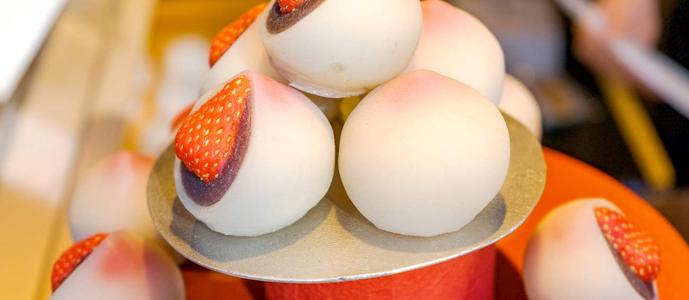

Daifuku

Description
Daifuku, or daifuku mochi, is a type of wagashi - japanese confectionery - consisting of a small round mochi filled with anko - red bean paste. Mochi, a thin glutinous rice cake that encapsulates the anko, is a staple of japanese cuisine and is an essential ingredient of various traditional desserts.
Daifuku mochi is typically made with shiratamako - glutinous rice flour -, sugar and water, and can be easily prepared at home using a steamer or a microwave. Although daifuku are stuffed with various scrumptious fillings, the classic variant calls for anko, a red bean paste that usually comes in two forms: coarse (tsubuan) and fine (koshian).
Ingredients
- 3/4 cup (100g) shiratamako or mochiko - glutinous rice flour/sweet rice flour
- 3/4 cup (180ml) water
- 1/4 cup(50g) sugar (do not omit sugar as it helps mochi stay softer)
- 1/2 cup (100g) potato starch/cornstarch
- 1 1/2 cups (480g) anko
Steps
-
In a large bowl, combine the shiratamako or mochiko with sugar and whisk. Then, add water and mix until combined.
-
If you use a microwave for cooking the mochi, cover the bowl with plastic wrap and heat it in the microwave on high heat for 1 minute. Remove the bowl from the microwave and stir the mochi with a wet rubber spatula. Cover the mochi and cook it for 1 additional minute. Repeat the stirring, then cook for 30 more seconds. The mochi should turn translucent by this point.
-
If you use a steamer for cooking the mochi, cover the steamer lid with a towel to prevent condensation from dripping into the mochi mixture. Put the bowl in the steamer basket, cover it, and cook for 15 minutes. Halfway through the cooking, stir the mochi with a wet rubber spatula, put the lid back on, and finish cooking.
-
Spread a sheet of parchment paper over the work surface, dust it generously with potato starch, then transfer the cooked mochi onto it.
-
Dust the mochi with some more potato starch and let it cool a bit. Using a dusted rolling pin, evenly spread out the mochi, transfer it onto a baking sheet (with the parchment paper), and place it in the refrigerator for 15 minutes to set.
-
Remove the mochi from the refrigerator and use a 3.5 inch (9cm) cookie cutter to cut out 7-8 circles.
-
Using a pastry brush, dust off the excess potato starch from the mochi wrappers. Cover a plate with cling film, put a mochi wrapper on top, then top the mochi with another piece of cling film. Following this stacking method, do the same with the remaining mochi wrappers.
-
Make a ball out of the remaining dough, spread it out with a rolling pin, and cut 4-5 more circle wrappers.
-
One at a a time, fill each mochi wrapper with a scoop of anko.
-
To wrap the anko, pinch together the four corners of the mochi wrapper, then pinch the remaining corners together as well. Dust the sealed area with potato starch.
-
Repeat the same process with the rest of the mochi wrappers.
-
Keep the daifuku mochi in an airtight container in a cool and dry place.